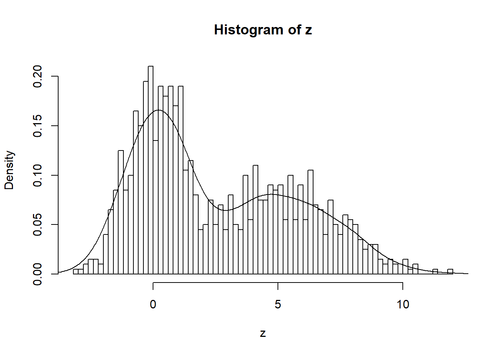
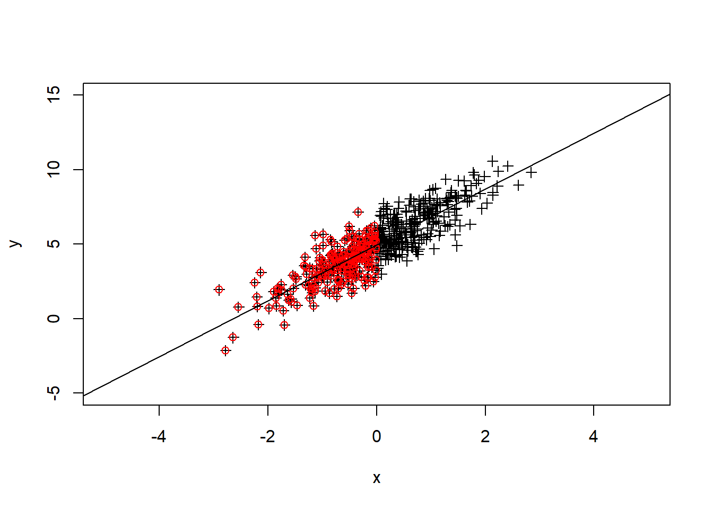

6 Lecture 05 - Multiple plate reader file
강의노트와 실습용 엑셀파일은 다음을 참고 하세요
이번 시간에는 R에서 제공하는 기본 그래프 함수들을 간략하게 알아보고 지난 3번째 강의에서 간략하게 실습했던 multiple plate reader (\(Victor^{TM}\), PerkinElmer, Inc.) 장비를 통해 측정된 데이터를 읽어와서 분석하기 위한 함수를 작성해 보겠습니다. 생물학 실험에서 샘플의 실험 조건이 다양하게 달라지고 96 well plate상에서 측정된 위치 등이 수시로 바뀌는 등의 상황에 의존적이지 않고 해당 장비를 사용할 경우에 한해서는 일반적으로 사용할 수 있는 함수를 만드는 것이 목표 입니다.
6.1 File I/O 파일 입출력
먼저 지난 시간에 배웠던 파일 입출력 코드를 보겠습니다. write.table 함수는 택스트 파일로 해당 데이터를 저장합니다. ?write.table 도움말을 보시면 quote=TRUE로 모든 값들을 따옴표가 있는 문자로 저장합니다. 따라서 숫자형으로 저장하기 위해서는 quote=F를 명시해야 하며 read.table은 테이블 형태로 파일 내용을 읽어오며 반환되는 오브젝트 타입은 기본적으로 data.frame 입니다.
x1 <- c(1,2,5,7)
y1 <- c(1,6,7,8)
xy<-data.frame(x1, y1)
write.table(xy, file="table_write.txt", quote=F)
myxy <- read.table(file="table_write.txt")
myxy## x1 y1
## 1 1 1
## 2 2 6
## 3 5 7
## 4 7 8class(myxy)## [1] "data.frame"names(myxy)## [1] "x1" "y1"6.2 plot 산포도
R에서 plot 함수는 가장 기본이 되는 그래프 함수 입니다. 아래는 산포도를 그려주는 코드로서 myxy가 두 개의 변수(x1과 y1)를 가지고 있으므로 아래 명령들은 모두 같은 그림을 그려주게 됩니다. 가장 마지막 명령은 formula를 사용한 plot으로 첫번째 파라메터 인자로 formula 타입이 전달되면 plot.formula 함수가 실행되며 x, y 값이 전달될 경우 plot.default 함수가 수행됩니다. R에서는 이렇게 전달되는 파라메터의 타입에 따라서 다른 기능을 하는 함수를 Generic function 이라고 합니다.
plot(myxy)
plot(myxy$x1, myxy$y1)
plot(x=myxy$x1, y=myxy$y1)plot(y1~x1, data=myxy)
6.3 hist 히스토그램
hist는 데이터들의 분포를 히스토그램으로 그려주는 함수입니다. 히스토그램은 데이터들이 갖는 값을 특정 구간으로 나누고 각 구간에 해당하는 데이터가 몇 개인지 빈도수를 계산하여 막대그래프로 보여주는 함수 입니다.
x <- rnorm(100)
hist(x, br=20, xlim=c(-3,3), main="Main text", xlab="X label")
6.4 boxplot 상자그래프
boxplot은 데이터의 여러가지 대표값 (중간값 median, 첫번째 사분위수 1st quantile, 세번째 사분위수 3rd quantile, 최소 minimum, 최대값 maximum) 등을 한눈에 볼 수 있도록 만들어놓은 그래프 입니다.
boxplot(x)
data.frame 타입의 오브젝트에 대해서 boxplot을 그릴 경우 여러 변수의 데이터들의 분포를 한눈에 비교할 수 있읍니다.
y <- rnorm(100, 1, 1)
#boxplot(y)
xy <- data.frame(x, y)
boxplot(xy)
class(xy)## [1] "data.frame"6.5 barplot 막대그래프
막대그래프는 기존 수업에서도 실습을 진행한 그래프로 각 값들을 막대 형태로 나란히 배치하여 서로 비교가 용이하도록 만든 그래프 입니다. table 함수는 같은 값을 갖는 데이터들이 몇 개나 있는지 테이블을 만들어주는 함수 입니다. rbind는 두 변수를 row를 기준으로 붙여주는 역할의 함수입니다.
x <- sample(1:12, 200, replace = T)
tab_x <- table(x)
y <- sample(1:12, 200, replace = T)
tab_y <- table(y)
tab_xy <- rbind(tab_x, tab_y)
#barplot(tab_xy)
#barplot(tab_xy, beside = T)
#barplot(tab_xy, beside = T, col=c("darkblue","red"))
barplot(tab_xy, beside = T, col=c("darkblue","red"), xlab="Month")
barplot(tab_xy, beside = T, col=c("darkblue","red"), xlab="Month", horiz=TRUE)
6.6 other examples 그래프 예시
위 예제들에서 사용한 high level function들을 low level function (lines, points, ablines, axis 등)들과 함께 사용함으로써 원하는 도표 대부분을 그려낼 수 있습니다. 최근 널리 사용되는 ggplot2 패키지를 이용한 그래프 사용법 강의에서는 오늘 배우는 그래픽 명령어는 거의 사용하지 않습니다. 그러나 위 함수들은 R의 기본 그래프 함수들로서 단순한 도표에서부터 복잡한 그래픽까지 구현할 수 있는 다양한 유연성을 제공하므로 기본적인 사용법을 정확히 이해하는 것이 필수입니다.
아래 도표는 평균 0, 분산 1인 분포에서 500개의 랜덤한 수를 뽑아 x에 저장하고 x의 분포를 히스토그램으로 표현한 것 입니다.
x <- rnorm(500)
hist(x, 100)
아래는 앞서 생성한 x 값들과 상관성이 있는 y값들을 (x에 2를 곱하고 평균 5, 분산 1인 랜덤하게 뽑힌 수를 노이즈로 더함) 생성하고 모든 1000개 값들의 분포를 그린 히스토그램 입니다. 또한 density 함수와 lines 함수를 조합하여 확률밀도함수 커브를 그려 넣었습니다. 이 때 hist 함수에 probability=T 옵션을 넣어 y축의 스케일을 확률밀도함수의 y 스케일과 맞춰주어 같은 화면에 그려지도록 했습니다.
y <- 2*x + rnorm(500, mean=5, sd=1)
z <- c(x,y)
hist(z, br=100, probability = T)
lines(density(z))
위에서 생성한 x, y 값의 산포도를 그리고 x축과 y축 범위를 xlim, ylim 파라메터로 조절했습니다. ?pch 도움말을 참고하여 다양한 포인트 모양을 선택할 수 있으며 x 값이 0 보다 작은 경우의 index를 뽑아 해당되는 x 값들과 그 값들의 짝이 되는 y값들에 대해서만 다시 포인트 그림을 red 색상으로 그려 넣었습니다. lm 은 linear model의 약자로 회귀 곡선을 구할 때 사용하는 함수이며 이 함수를 abline과 조합하여 회귀 직선을 그릴 수 있습니다.
plot(x,y, xlim=c(-5, 5), ylim=c(-5, 15), pch=3)
idx <- which(x<0)
points(x[idx], y[idx], col="red")
abline(lm(y~x))
6.7 Multiplate reader 기능 구현
함수를 만들기 위한 프로그래밍 소개 및 전략 등의 내용은 강의노트를 참고하시기 바랍니다. 특히 exp_design.xlsx 파일은 실험 후 결과 측정을 위하여 96 well plate에 위치할 샘플들의 위치 및 실험 조건을 명시해둔 파일로서 이번 시간 만드는 함수의 핵심이 되는 파일입니다.
일반적으로 R에서 함수를 만들기 전에 해당 함수가 가진 기능들을 한줄 한줄 먼저 구현해서 확인한 후 함수 형태로 만들어 내는 것이 좋습니다. 먼저 excel 파일을 읽어오기 위하여 readxl 패키지를 불러온 후 read_excel 함수의 range 파라메터를 이용하여 96 well plate의 dimension과 같은 8 x 12 데이터를 모두 읽습니다. read_excel 함수는 기본적으로 tibble 형식의 데이터를 반환하지만 본 강의에서는 data.frame 형식으로 사용하기 위하여 as.data.frame 함수를 이용하여 변환을 해 줍니다. 참고로 최근 R을 이용한 데이터 분석에는 tibble 타입이 많이 쓰이는 추세입니다.
#options(readxl.show_progress = FALSE)
library(readxl)
design_file_name <- "exp_design.xlsx"
data_file_name <- "Rprog04-fl.xls"
#mydesign <- read_excel(design_file_name, sheet=1)
mydesign <- as.data.frame(read_excel(design_file_name, sheet=1, range="A1:L8", skip = 0, col_names=F))
mydata <- as.data.frame(read_excel(data_file_name, sheet=1))
#head(mydesign)
#head(mydata)## New names:
## * `` -> `..1`
## * `` -> `..2`
## * `` -> `..3`
## * `` -> `..4`
## * `` -> `..5`
## * ... and 7 more## New names:
## * Time -> Time..5
## * Time -> Time..7위 design 엑셀 파일로 샘플이 놓인 위치와 그 실험 조건을 읽어올 수 있으나 data를 뽑아올 수 있는 well의 이름인 (mydata 데이터 확인) A01, A02, …, B01, B02와 같은 이름 정보는 존재하지 않습니다. 이에 96 well plate 와 동일한 크기의 메트릭스를 만들고 각 셀에 well 이름들로 값을 넣어 추후 인덱스를 얻었을 때 그 위치에 해당하는 well 이름을 얻을 수 있도록 합니다. sprintf는 %02d와 같이 명시한 포맷으로 숫자를 출력해주는 함수 입니다. %02d는 digit 2자리 포맷을 가리키는 문자열로 한자리 숫자의 경우 앞에 0을 넣어 2자리로 만들어 출력해 줍니다.
# make a position matrix
pos1 <- rep(LETTERS[1:8], time=12)
pos2 <- rep(sprintf("%02d", 1:12), each=8)
well_position_labels <- paste(pos1, pos2, sep="")
well_position_matrix <- matrix(well_position_labels, nrow=8, ncol=12)이제 design 메트릭스에서 실험 조건이 명시된 위치의 well 이름을 꺼내오는 작업을 수행합니다. 이 때 바로 matrix에 대해서 코딩을 하기 보다는 vector 수준에서 값을 불러오는 코드를 먼저 만들고 matrix로 확장하는 것이 좋습니다. 아래는 첫 번째 컬럼의 값들에 대해서만 (vector 수준에서) 값을 추출하는 코드입니다. is.na는 해당 값이 NA인지 검사해서 NA일 경우 TRUE를 그렇지 않으면 FALSE를 리턴해주는 함수 입니다.
## vector
tmpi <- mydesign[, 1]
tmpv <- well_position_matrix[, 1]
!is.na(tmpi)
which(!is.na(tmpi))
tmpi[!is.na(tmpi)]
tmpv[!is.na(tmpi)]이제 위 코드를 함수로 만들고 lapply 함수를 사용하여 data.frame에 적용하도록 합니다. 함수는 다음 두 개의 함수(extract_values, extract_values2)로서 extract_value 함수는 입력되는 파라메터 벡터 x에서 na 가 아닌 값들을 추출하는 함수입니다. extract_value2는 다른 두 개의 메트리스를 파라메터로 넘겨서 값을 뽑기 위한 변형된 함수로 입력되는 파라메터 x가 16개의 값을 가지며 1부터 8까지 8개의 값들 중 na 가 아닌 인덱스를 뽑아내고 실제 값은 9부터 16까지의 8개 값들 중 해당하는 인덱스의 값을 뽑아내는 함수 입니다.
extract_values <- function(x){
index <- which(!is.na(x))
return(x[index])
}
#extract_values(tmpi)
extract_values2 <- function(x){
conditions <- x[1:8]
well_names <- x[9:16]
index <- which(!is.na(conditions))
return(well_names[index])
}
#extract_values2(c(tmpi, tmpv))이제 위 함수들, 특히extract_value2 함수을 이용해서 well 이름을 추출하기 위해서 mydesign과 well_position_matrix 두 메트릭스를 bind한 bound_matrix라는 메트릭스를 만들고 lapply로 extract_value 함수와 extract_value2 함수를 사용하여 well 이름과 well_condition을 각각 뽑아 냅니다. 마지막 well_info data.frame은 두 변수를 묶어놓은 것으로 data.frame 생성시 문자형이 factor형으로 자동 형 변환 되는 것을 막기 위하여 stingAsFactors = F 옵션을 추가해 줍니다.
colnames(mydesign) <- as.character(1:12)
colnames(well_position_matrix) <- as.character(1:12)
bound_matrix <- rbind(mydesign, well_position_matrix)
tmpv <- lapply(bound_matrix, extract_values2)
well_names <- unlist(tmpv)
tmpv <- lapply(mydesign, extract_values)
well_conditions <- unlist(tmpv)
well_info <- data.frame(well_names, well_conditions, stringsAsFactors = F)well_info에 명시된 well 이름에 해당하는 데이터를 mydata에서 추출하기 위해 match 함수를 사용합니다. match 함수는 두 개의 벡터에서 공통되는 값을 가진 인덱스를 뽑기 위한 함수 입니다.
#dim(mydata)
head(mydata)## Plate Repeat Well Type Time..5 595nm_kk (A) Time..7
## 1 1 1 B01 M 0.0001843750 0.7012086 0.0008273148
## 2 1 1 B02 M 0.0001888889 0.7518509 0.0008320602
## 3 1 1 B03 M 0.0001931713 0.7232866 0.0008368056
## 4 1 1 B04 M 0.0001974537 0.7440926 0.0008415509
## 5 1 1 B05 M 0.0002017361 0.7056004 0.0008462963
## 6 1 1 B06 M 0.0002060185 0.7228400 0.0008510417
## EGFP_sulim (Counts)
## 1 67809
## 2 60025
## 3 102745
## 4 99979
## 5 108175
## 6 109575head(well_info)## well_names well_conditions
## 11 B01 1;1;0
## 12 C01 1;2;0
## 13 D01 2;1;0
## 14 E01 2;2;0
## 21 B02 1;1;10
## 22 C02 1;2;10mydata에는 well 이라는 변수에 well_info에는 well_names라는 변수에 우리가 비교하고자 하는 값들이 들어 있습니다. match 함수의 리턴 값은 첫번째 파라메터로 넘겨진 변수를 기준으로 해당 값들이 두 번째 파라메터 변수의 값에 해당하는 인덱스 입니다. 쉽게 혼동될 수 있으니 꼭 help를 참고해서 명확히 이해하시길 바랍니다. mydata에서 데이터를 뽑아야 하므로 아래처럼 well_info에 존재하는지 검사하고 존재하는 값들만 subset 함수를 사용해서 뽑아냅니다.
# match(mydata$Well, well_info$well_names)
tmpidx <- match(mydata$Well, well_info$well_names)
tmp_mydata_subset <- subset(mydata, !is.na(tmpidx))
head(tmp_mydata_subset)## Plate Repeat Well Type Time..5 595nm_kk (A) Time..7
## 1 1 1 B01 M 0.0001843750 0.7012086 0.0008273148
## 2 1 1 B02 M 0.0001888889 0.7518509 0.0008320602
## 3 1 1 B03 M 0.0001931713 0.7232866 0.0008368056
## 4 1 1 B04 M 0.0001974537 0.7440926 0.0008415509
## 13 1 1 C01 M 0.0002644676 0.8026616 0.0009127315
## 14 1 1 C02 M 0.0002687500 0.7750938 0.0009174769
## EGFP_sulim (Counts)
## 1 67809
## 2 60025
## 3 102745
## 4 99979
## 13 42654
## 14 33957위 tmp_mydata_subset에서 우리가 필요한 정보는 well 이름과 OD, 형광값으로 각각 3번째 6번째 8번째 컬럼에 들어있습니다. 그러나 실험에서 OD 만 찍을 경우 8번째 컬럼은 존재하지 않게 됩니다. 즉, 이 부분이 실험 조건에 따라서 에러가 발생될 수 있는 부분이라 좀 더 일반적으로 사용 가능한 함수를 구현하기 위해서는 이 부분을 개선해줄 필요가 있습니다. OD, green 형광, red 형광을 측정할 경우 3, 6, 8, 10 번째 컬럼 순으로 데이터가 저장될 수 있습니다. 따라서 tmp_mydata_subset 의 컬럼 길이보다 작은 짝수만큼 컬럼을 선택하면되고 다음과 같이 간단히 코드를 작성할 수 있습니다 (3은 필수, 최소 하나의 데이터를 찍으면 6번째 컬럼에 들어가므로 시작은 6부터).
sel_column <- c(3, seq(6, ncol(tmp_mydata_subset), by=2))
mydata_subset <- tmp_mydata_subset[,sel_column]
head(mydata_subset)## Well 595nm_kk (A) EGFP_sulim (Counts)
## 1 B01 0.7012086 67809
## 2 B02 0.7518509 60025
## 3 B03 0.7232866 102745
## 4 B04 0.7440926 99979
## 13 C01 0.8026616 42654
## 14 C02 0.7750938 33957이제 well_info와 mydata_subset을 하나의 data.frame으로 합하겠습니다. 하나의 오브젝트로 구성하는 것이 추후 그래프 작성이나 분석을 위해서 편리하기 때문입니다. merge라는 함수는 두 데이터셋을 각각 공통으로 가진 변수를 기준으로 합해주는 함수입니다. 단순히 cbind 등으로 두 데이터프레임을 붙여 놓을 경우 각각의 데이터 정렬 순서가 다르기 때문에 하나의 row에 다른 정보가 섞이게 됩니다. 따라서 두 데이터셋을 붙일 경우 위와 같이 공통되는 변수를 기준으로 적절히 정렬 후 붙이는 것이 필수입니다. 아래 코드의 by.x는 첫번째 파라메터로 넘겨진 오브젝트가 갖는 공통된 변수 이름이며 두번째 by.y는 두번째 파라메터로 넘겨진 오브젝트가 갖는 공통된 변수 이름 입니다.
final_data <- merge(well_info, mydata_subset, by.x="well_names", by.y="Well")
head(final_data)## well_names well_conditions 595nm_kk (A) EGFP_sulim (Counts)
## 1 B01 1;1;0 0.7012086 67809
## 2 B02 1;1;10 0.7518509 60025
## 3 B03 1;1;100 0.7232866 102745
## 4 B04 1;1;1000 0.7440926 99979
## 5 C01 1;2;0 0.8026616 42654
## 6 C02 1;2;10 0.7750938 33957이제 목적했던 함수를 만들기 전 마지막 단계로 실험 조건을 좀 더 보기 쉽게 바꿔보도록 하겠습니다. 위 데이터에 보시면 well_conditions 변수에 세 개의 실험 조건이 “;”으로 붙어 표현되어 있습니다. 각각 샘플이름, 반복횟수, 약품농도 입니다. 아래 strsplit 함수는 split에 명시된 문자를 기준으로 첫번째 파라메터 문자를 나누어 주는 기능을 수행합니다. 아래처럼 벡터연산이 가능하여 한번에 모든 컨디션 정보를 나누어 줄 수도 있습니다. 리턴값 형태는 리스트로서 unlist를 통해 벡터로 전환 가능 합니다.
## strsplit("1;1;0", split=";")
## unlist(strsplit("1;1;0", ";"))
tmp <- strsplit(final_data$well_conditions, ";")
head(tmp)## [[1]]
## [1] "1" "1" "0"
##
## [[2]]
## [1] "1" "1" "10"
##
## [[3]]
## [1] "1" "1" "100"
##
## [[4]]
## [1] "1" "1" "1000"
##
## [[5]]
## [1] "1" "2" "0"
##
## [[6]]
## [1] "1" "2" "10"그런데 위와 같이 벡터연산을 수행하여 정보를 추출할 경우 목적하는 바에 따라서 불편한 점도 있습니다. 본 강의에서는 아래와 같이 하나의 백터로 조건 정보를 입력받아 값을 쪼갠 후 이름을 붙여주는 함수를 만들고 이를 apply 함수와 비슷한 기능의 sapply를 적용하도록 하겠습니다. sapply의 차이점은 help를 참고하세요.
myparse <- function(x){
tmp <- unlist(strsplit(x, ";"))
names(tmp) <- c("sample_names", "replication", "concentration")
return(tmp)
}
tmpcond <- sapply(final_data$well_conditions, myparse)
head(tmpcond)## 1;1;0 1;1;10 1;1;100 1;1;1000 1;2;0 1;2;10 1;2;100 1;2;1000
## sample_names "1" "1" "1" "1" "1" "1" "1" "1"
## replication "1" "1" "1" "1" "2" "2" "2" "2"
## concentration "0" "10" "100" "1000" "0" "10" "100" "1000"
## 2;1;0 2;1;10 2;1;100 2;1;1000 2;2;0 2;2;10 2;2;100 2;2;1000
## sample_names "2" "2" "2" "2" "2" "2" "2" "2"
## replication "1" "1" "1" "1" "2" "2" "2" "2"
## concentration "0" "10" "100" "1000" "0" "10" "100" "1000"각각 쪼개서 이름을 붙이는 작업 후 리턴된 결과를 보니 3 x 16 matrix 입니다. 앞서 우리가 구한 final_data와 나란히 붙여 넣기 위해서 t라는 함수를 사용하여 행과 열을 교환하는 transformation 을 수행합니다. 이제 merge 함수를 사용하여 붙여 넣어야 하는데 t_tmpcond 행렬에는 final_data와 같은 정보를 갖는 변수가 없습니다. 따라서 final_data의 well_conditions 와 같은 정보를 갖는 t_tmpcond의 rowname을 하나의 변수로 추가해 준 후 해당 공통 정보를 갖는 변수를 기준으로 두 오브젝트를 merge 해 줍니다. 마지막으로 well_conditions 정보는 중복이므로 제거해 주는 작업을 수행합니다.
t_tmpcond <- t(sapply(final_data$well_conditions, myparse))
t_tmpcond2 <- cbind(t_tmpcond, rownames(t_tmpcond))
t_tmpcond2 <- cbind(t_tmpcond, well_conditions=rownames(t_tmpcond))
final_data <- merge(final_data, t_tmpcond2, by="well_conditions")
final_data <- final_data[,-1]
head(final_data)## well_names 595nm_kk (A) EGFP_sulim (Counts) sample_names replication
## 1 B01 0.7012086 67809 1 1
## 2 B02 0.7518509 60025 1 1
## 3 B03 0.7232866 102745 1 1
## 4 B04 0.7440926 99979 1 1
## 5 C01 0.8026616 42654 1 2
## 6 C02 0.7750938 33957 1 2
## concentration
## 1 0
## 2 10
## 3 100
## 4 1000
## 5 0
## 6 106.8 Multiplate reader 함수 만들기
지금까지 수행한 코드들로 다음과 같은 함수를 만들 수 있습니다.
read_multiplate_data <- function(file_names){
design_file_name <- file_names[1]
data_file_name <- file_names[2]
# ....
# .... code for the function ...
# .... do it yourself ...
# ....
return(final_data)
}그리고 다음과 같이 엑셀 파일 이름만 넣어주면 원하는 데이터가 정리되어 나오게 됩니다.
multiplate_file_names <- c("exp_design.xlsx", "Rprog04-fl.xls")
myfinal_data <- read_multiplate_data(multiplate_file_names)함수의 기능은 앞서 설명드린 코드들로 대부분 구현 가능합니다. 물론 조금씩 더 신경쓸 부분이 있을 수 있으나 큰 오류는 없을 것으로 생각되며 구현중에 어려운 부분은 수업시간에 질문해 주시면 되겠습니다.